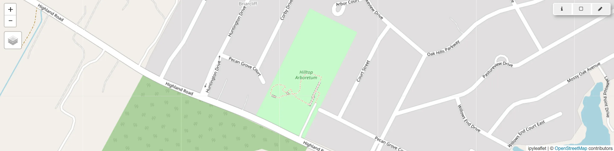
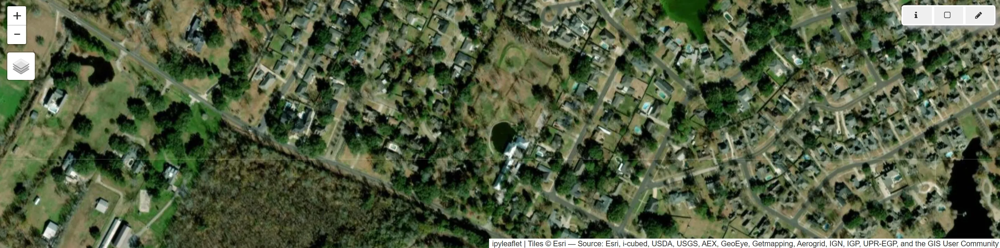

# Import modules
import sys
import subprocess
import numpy as np
# Find GRASS Python packages
sys.path.append(
subprocess.check_output(
["grass", "--config", "python_path"],
text=True
).strip()
)
# Import GRASS packages
import grass.script as gs
import grass.jupyter as gj
from grass.tools import Tools
# Create GRASS project
gs.create_project("hilltop", epsg="2801", overwrite=True)
# Initialize GRASS session
gj.init("hilltop")
tools = Tools(overwrite=True)
# Print projection
projection = tools.g_proj(format="shell", flags="p").keyval
print(projection.get("name"))Interactive maps
tutorial
ecology
grass
python
Interactive maps with GRASS.

Use an interactive map to find your study area and set your computational region.
Setup
Start a GRASS session in a new project. Set the coordinate reference system for the project to Louisiana State Plane South using EPSG code 2801.
Basemap
Start an interactive map session with the tile service set to OpenStreetMap. Browse to your study area. Use the interactive map widget to draw your computational region.
m = gj.InteractiveMap(
width=1600,
height=400,
map_backend="ipyleaflet",
tiles="OpenStreetMap.Mapnik",
use_region=True
)
m.show()Imagery
m = gj.InteractiveMap(
width=1600,
height=400,
map_backend="ipyleaflet",
tiles="Esri.WorldImagery",
use_region=True
)
m.show()